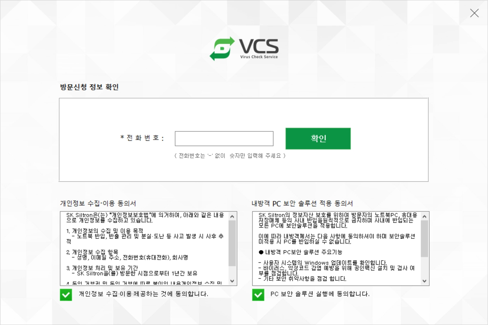
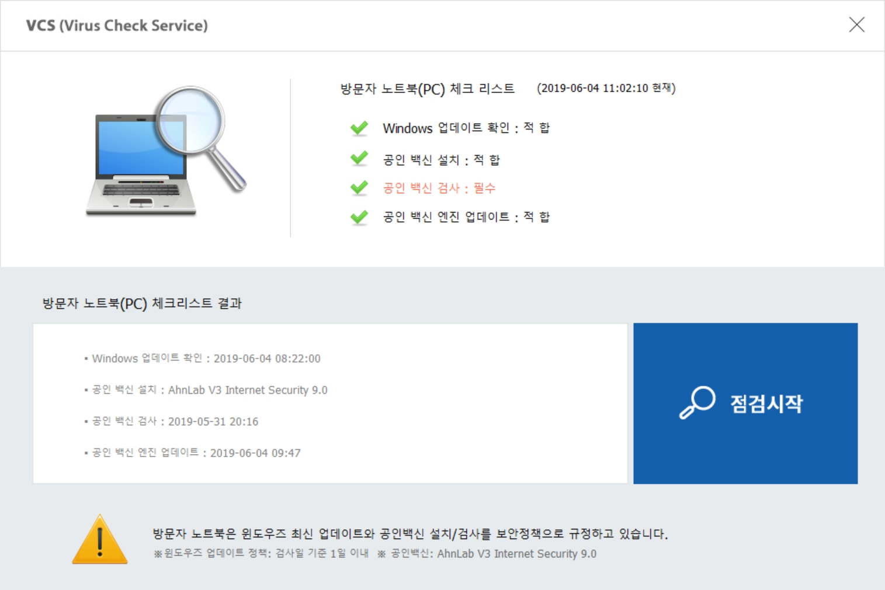
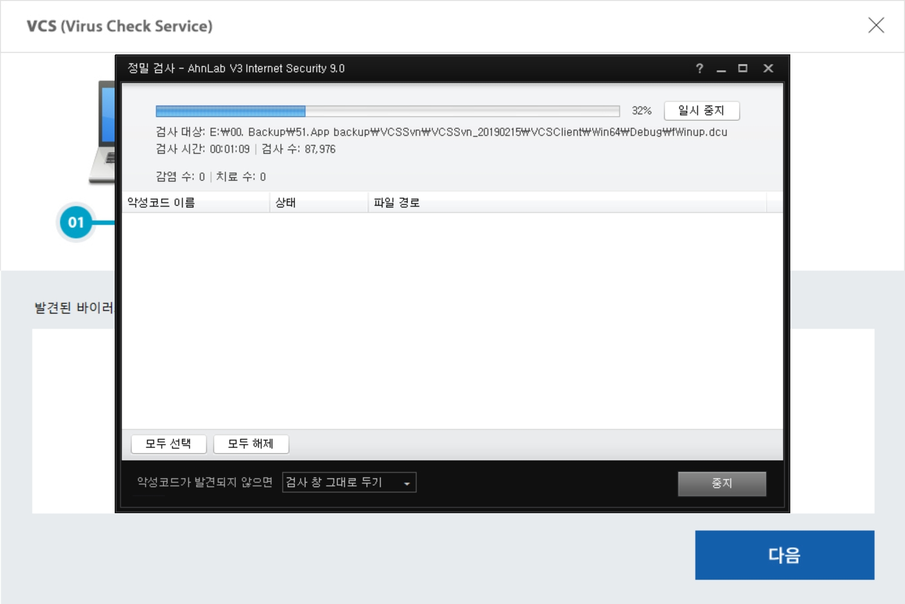
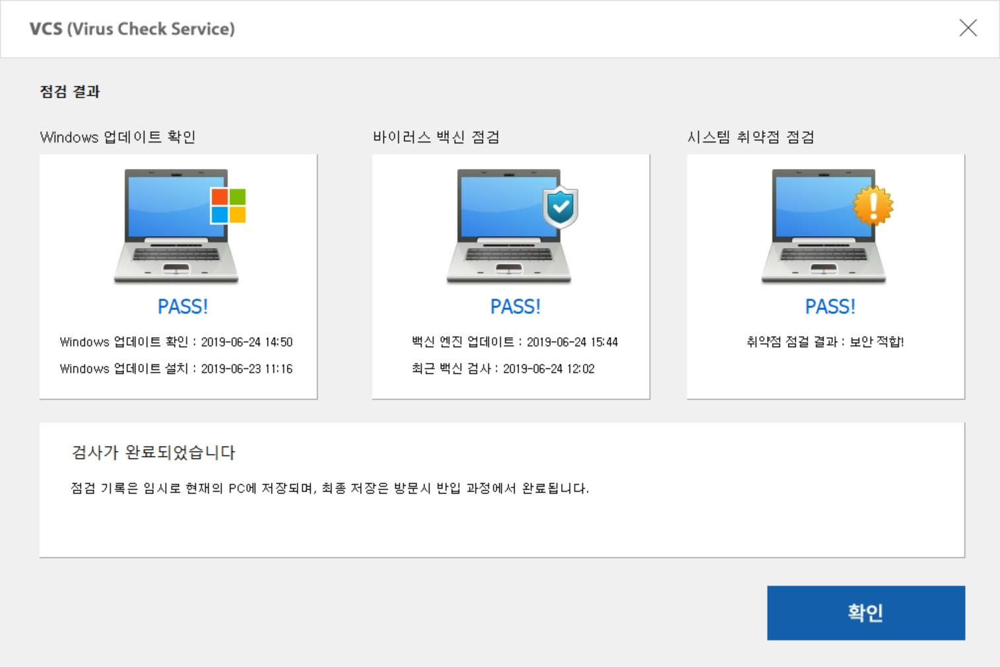

사용방법
1. 프로그램 다운로드
- 방문社에서 지원하는 웹 사이트(ex:방문포탈 사이트) 에서 설치 파일을 다운로드 받는다.
- 32bit 용 설치파일 : InstallVCS32.exe
- 64bit 용 설치파일 : InstallVCS64.exe
2. 프로그램 시작
- 개인정보 수입.이용 동의서 & 내방객 PC 보안 솔루션 적용 동의서 체크
- 방문신청시 입력한 방문객 전화번호 입력 후 확인

3. 메인 화면
- 바이러스 백신 설치여부 체크
- 바이러스 백신이 설치되어 있지 않다면 설치 후 진행 한다.

4. Windows Update 확인
- 최신 Windows update 상태를 분석하여 미충족 시 update 필수
5. 바이러스 백신 검사 (공인백신이 V3 제품인 경우 해당)
- V3 Internet Security 백신이 설치되어 있을 경우 자동으로 검사 시작
- 검사가 완료되면 결과를 분석하여 감염 여부 판단
- 감염 내역이 확인되면 치료 후 다시 한번 검사
- 공인 백신이 AhnLab社의 V3 제품이 아닌경우 설치 확인 후 다음으로 진행

6. 취약점 점검
- Windows 시스템상의 기본적인 취약점을 분석하여 조치

7. 검사 완료 및 검사 결과 임시 저장
- 검사 최종 결과 확인
- 검사 결과는 방문객 노트북에 임시로 저장되며, 서버로의 저장은 사업장 방문시 노트북 반입 솔루션 실행중에 이루어 집니다.

Created with the Personal Edition of HelpNDoc: Easy CHM and documentation editor